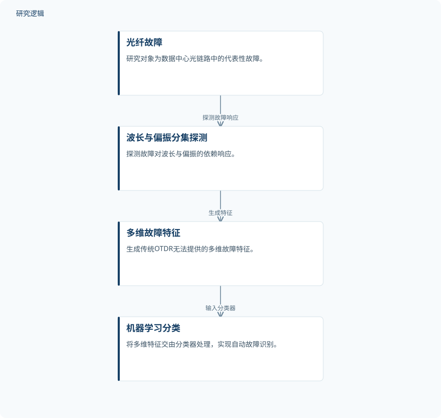

摘要解读
面向数据中心网络精准光纤故障识别的波长与偏振多样性光时域反射技术
Wavelength and Polarization Diversity OTDR for Accurate Fiber Faults Identification in Data-Center Networks
解读更新 2026-11-10 10:19 · 依据公开摘要整理，未核验全文细节
光纤故障不仅要定位，还要辨清类型。针对数据中心网络中不同故障呈现相似OTDR迹线的问题，这项研究利用波长与偏振响应增加判别信息，为理解智能运维中的“测什么、再如何分类”提供了具体案例。
文章目录
迹线相似，让故障定位之外的诊断变难
随着数据中心网络容量与复杂性增长，快速、准确识别光纤故障对维持服务连续性、减少停机和实现自动维护愈发重要。光时域反射测量（OTDR）已广泛用于光纤监测与故障定位，但定位异常与辨明故障类型并非同一件事。
摘要指出，传统OTDR依赖单波长、偏振不敏感的测量，不同故障可能呈现相似迹线，因而难以准确区分。软故障尤其容易与其他损伤混淆，这也是本文希望解决的核心问题。
先增加波长与偏振信息，再交给分类器
研究提出波长与偏振多样性OTDR（WPD-OTDR）框架，通过探测光纤故障对波长和偏振的依赖响应，生成传统OTDR无法提供的多维故障特征，再由机器学习分类器完成自动识别。
作者在实验中模拟并评估了六类具有代表性的数据中心光链路故障，其中包括传统OTDR难以区分的情况。摘要明确了测量、特征与分类之间的关系，但未交代分类器类型及具体特征处理方式。
依据摘要整理的WPD-OTDR识别流程


仅概括摘要明确陈述的探测、特征生成与分类关系，不表示论文原图或具体实验配置。
下载 SVG图示关系说明
实线表示相邻阶段的信息流，虚线表示跨阶段联系或反馈。
光纤故障 → 波长与偏振响应探测：探测响应；波长与偏振响应探测 → 多维故障特征：生成特征；多维故障特征 → 机器学习分类器：输入分类器
模拟故障评估中，总体识别准确率达到99.23%
摘要报告，传统OTDR的总体识别准确率为72.30%；对于迹线高度相似的部分故障类型，如宏弯曲、微弯曲和不良熔接，单类准确率低于60%。这些结果体现了相似迹线对故障分类的限制。
相比之下，WPD-OTDR能够清晰区分这些故障类别，总体识别准确率提高至99.23%。这一结果支持波长与偏振多样性有助于缓解传统OTDR的判别歧义，但不能直接等同于真实网络中的维护收益已得到验证。
准确率之外，样本与部署边界仍需查阅
仅凭摘要，无法判断样本规模、各类别分布、训练与测试划分，以及测试数据的独立性；也无法核实传统OTDR与WPD-OTDR比较时的具体配置、分类器设置和统计不确定性。这些属于摘要未报告的信息，不意味着论文没有开展相关工作。
摘要所述验证来自实验模拟故障，尚不足以判断其对不同链路条件、现场噪声或真实数据中心故障的适用范围。自动化、可靠的故障管理是作者提出的应用前景，不能据此认定已经实现现场部署或减少停机。
阅读启发：关注判别信息从哪里来
阅读启发：这项工作的关注点不仅是机器学习分类，还包括通过测量获得更有区分度的信息。进一步阅读时，值得关注波长与偏振各自提供了什么判别依据，以及作者如何验证这些信息对易混淆故障的贡献。
建议结合全文核对数据划分、比较条件与现场验证范围，再判断该框架距离数据中心智能运维还有多远；不宜仅凭总体准确率推断其跨场景可靠性。
以上为本站阅读启发与建议，不是论文已验证的结论。